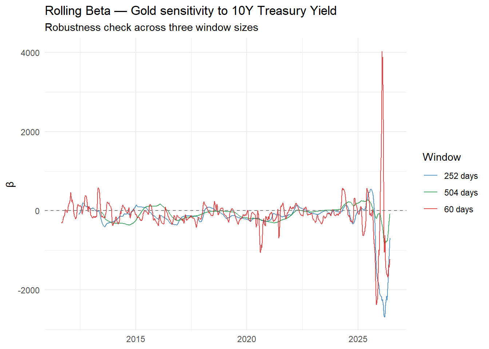
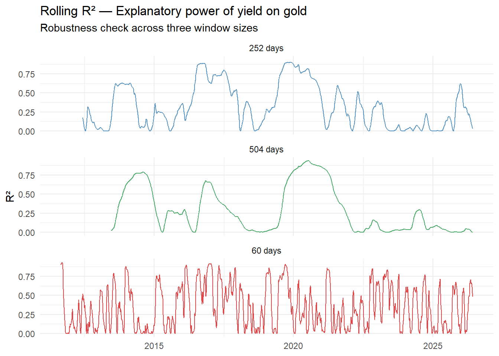
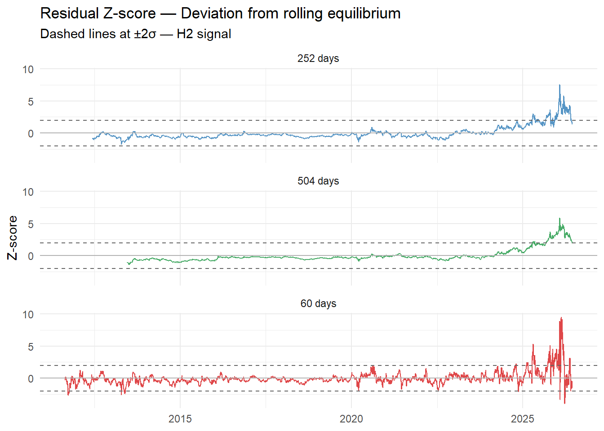

The cointegration tests on both the full period (2011–2026) and the pre-break sub-period (2011–2021) failed to confirm a stable long-run equilibrium between gold and the nominal 10Y Treasury yield.
Rather than concluding prematurely that no relationship exists, we investigate whether the nominal yield retains any episodic explanatory power over gold. The rolling OLS approach estimates \(\beta\) on a moving window, allowing us to observe how — and when — the sensitivity of gold to the nominal yield activates or disappears over time.
We estimate the following regression on each rolling window \([t-w, t]\):
where \(w\) is the window size. We compare three window sizes as a robustness check:
60 days (~3 months) — reactive, but noisy
252 days (~1 year) — standard
504 days (~2 years) — smooth, but slow to detect breaks
If conclusions hold across all three windows, the result is robust to this arbitrary choice.
Setup
Code
library(arrow)library(tidyverse)panel <-read_parquet("../data/macro_panel.parquet")# Generic rolling OLS functionroll_ols <-function(data, window) { n <-nrow(data)map_dfr((window +1):n, function(i) { fit <-lm(gold ~ yield, data = data[(i - window):i, ])tibble(date = data$date[i],beta =coef(fit)[2],r2 =summary(fit)$r.squared,resid =tail(residuals(fit), 1) ) })}
Rolling Beta — Three Windows
Code
windows <-c(60, 252, 504)results_all <-map_dfr(windows, function(w) {roll_ols(panel, w) |>mutate(window =paste0(w, " days"))})results_all |>ggplot(aes(x = date, y = beta, color = window)) +geom_line(alpha =0.8) +geom_hline(yintercept =0, linetype ="dashed", color ="grey50") +scale_color_manual(values =c("60 days"="#d7191c","252 days"="#2c7bb6","504 days"="#1a9641" )) +labs(title ="Rolling Beta — Gold sensitivity to 10Y Treasury Yield",subtitle ="Robustness check across three window sizes",x =NULL, y ="β", color ="Window" ) +theme_minimal()

Rolling R² — Three Windows
Code
# Graphique 2 — R² en facetsresults_all |>ggplot(aes(x = date, y = r2, color = window)) +geom_line(alpha =0.8) +facet_wrap(~window, ncol =1) +scale_color_manual(values =c("60 days"="#d7191c","252 days"="#2c7bb6","504 days"="#1a9641" )) +labs(title ="Rolling R² — Explanatory power of yield on gold",subtitle ="Robustness check across three window sizes",x =NULL, y ="R²", color ="Window" ) +theme_minimal() +theme(legend.position ="none")

Residual Z-score — H2 Signal (252-day window)
Code
results_all <- results_all |>group_by(window) |>mutate(resid_mean =mean(resid, na.rm =TRUE),resid_sd =sd(resid, na.rm =TRUE),z_score = (resid - resid_mean) / resid_sd ) |>ungroup()results_all |>ggplot(aes(x = date, y = z_score, color = window)) +geom_line(alpha =0.8) +geom_hline(yintercept =2, linetype ="dashed", color ="grey40") +geom_hline(yintercept =-2, linetype ="dashed", color ="grey40") +geom_hline(yintercept =0, linetype ="solid", color ="grey70") +facet_wrap(~window, ncol =1) +scale_color_manual(values =c("60 days"="#d7191c","252 days"="#2c7bb6","504 days"="#1a9641" )) +labs(title ="Residual Z-score — Deviation from rolling equilibrium",subtitle ="Dashed lines at ±2σ — H2 signal",x =NULL, y ="Z-score", color ="Window" ) +theme_minimal() +theme(legend.position ="none")

Interpretation
Rolling β : if the three windows consistently hover around zero over 2012–2024, the absence of a stable relationship is robust to window choice. The post-2025 explosion is likely a statistical artifact driven by gold’s strong upward trend against a range-bound yield.
Rolling R² : episodic peaks — notably around 2016 and during the COVID shock (2020) — suggest the relationship activates in specific macro regimes: periods of low inflation where the nominal yield closely tracks the real yield.
Z-score (H2) : in the absence of a stable cointegrating relationship, the Z-score does not constitute a mean-reversion signal in the strict sense. It measures the current deviation of gold relative to its historical average relationship with yields. A sustained Z-score above +2σ — as observed from 2024 onward — signals that gold is operating in a structurally different regime, likely driven by factors beyond Treasury yields (geopolitical risk, de-dollarization, central bank demand).
Conclusion
The rolling OLS analysis delivers a clear and robust finding across all three window sizes: the nominal 10Y Treasury yield is not a structural explainer of gold prices.
The relationship is episodic. Periods of meaningful explanatory power — notably 2014–2016 and 2018–2022 — are visible in the 504-day R², reaching peaks above 0.75. However, these episodes are the exception rather than the rule over the full 2011–2026 sample.
This result is consistent with the theoretical limitation outlined in the introduction: the nominal yield embeds both the real rate and inflation expectations, two forces with opposing effects on gold. When inflation dominates — as it did post-2022 — the nominal yield loses its directional signal for gold, and the relationship breaks down or reverses.
The Z-score analysis reinforces this conclusion. From 2011 to approximately 2023, residuals fluctuate within the ±2σ band across all window sizes — consistent with a relationship operating near its historical average. From 2024 onward, all three windows show a sustained and extreme deviation above +2σ, peaking near +8σ on the 252-day window. This is not a mean-reversion signal — it is evidence of a structural regime change — driven by factors that lie outside the scope of this analysis and that the nominal yield alone cannot capture..
H1 (long-run cointegration between gold and nominal yield): not validated. H2 (mean-reverting residual): partially validated — the signal holds in low-inflation regimes but breaks down when inflation expectations dominate the nominal yield signal.
These findings are discussed and synthesized in the general conclusion.
Source Code
---title: "Gold & Treasury Yields — Rolling OLS"author: "Gregoire MANSIO"format: htmlexecute: echo: true warning: false message: falseeditor: markdown: wrap: 72---## MotivationThe cointegration tests on both the full period (2011–2026) and thepre-break sub-period (2011–2021) failed to confirm a stable long-runequilibrium between gold and the nominal 10Y Treasury yield.Rather than concluding prematurely that no relationship exists, weinvestigate whether the nominal yield retains any episodic explanatorypower over gold. The rolling OLS approach estimates $\beta$ on a movingwindow, allowing us to observe how — and when — the sensitivity of goldto the nominal yield activates or disappears over time.We estimate the following regression on each rolling window $[t-w, t]$:$$\text{Gold}_t = \alpha_t + \beta_t \cdot \text{NominalYield}_t + \varepsilon_t$$where $w$ is the window size. We compare three window sizes as arobustness check:- **60 days** (\~3 months) — reactive, but noisy- **252 days** (\~1 year) — standard- **504 days** (\~2 years) — smooth, but slow to detect breaksIf conclusions hold across all three windows, the result is robust tothis arbitrary choice.------------------------------------------------------------------------## Setup```{r}library(arrow)library(tidyverse)panel <-read_parquet("../data/macro_panel.parquet")# Generic rolling OLS functionroll_ols <-function(data, window) { n <-nrow(data)map_dfr((window +1):n, function(i) { fit <-lm(gold ~ yield, data = data[(i - window):i, ])tibble(date = data$date[i],beta =coef(fit)[2],r2 =summary(fit)$r.squared,resid =tail(residuals(fit), 1) ) })}```------------------------------------------------------------------------## Rolling Beta — Three Windows```{r}windows <-c(60, 252, 504)results_all <-map_dfr(windows, function(w) {roll_ols(panel, w) |>mutate(window =paste0(w, " days"))})results_all |>ggplot(aes(x = date, y = beta, color = window)) +geom_line(alpha =0.8) +geom_hline(yintercept =0, linetype ="dashed", color ="grey50") +scale_color_manual(values =c("60 days"="#d7191c","252 days"="#2c7bb6","504 days"="#1a9641" )) +labs(title ="Rolling Beta — Gold sensitivity to 10Y Treasury Yield",subtitle ="Robustness check across three window sizes",x =NULL, y ="β", color ="Window" ) +theme_minimal()```------------------------------------------------------------------------## Rolling R² — Three Windows```{r}# Graphique 2 — R² en facetsresults_all |>ggplot(aes(x = date, y = r2, color = window)) +geom_line(alpha =0.8) +facet_wrap(~window, ncol =1) +scale_color_manual(values =c("60 days"="#d7191c","252 days"="#2c7bb6","504 days"="#1a9641" )) +labs(title ="Rolling R² — Explanatory power of yield on gold",subtitle ="Robustness check across three window sizes",x =NULL, y ="R²", color ="Window" ) +theme_minimal() +theme(legend.position ="none")```------------------------------------------------------------------------## Residual Z-score — H2 Signal (252-day window)```{r}results_all <- results_all |>group_by(window) |>mutate(resid_mean =mean(resid, na.rm =TRUE),resid_sd =sd(resid, na.rm =TRUE),z_score = (resid - resid_mean) / resid_sd ) |>ungroup()results_all |>ggplot(aes(x = date, y = z_score, color = window)) +geom_line(alpha =0.8) +geom_hline(yintercept =2, linetype ="dashed", color ="grey40") +geom_hline(yintercept =-2, linetype ="dashed", color ="grey40") +geom_hline(yintercept =0, linetype ="solid", color ="grey70") +facet_wrap(~window, ncol =1) +scale_color_manual(values =c("60 days"="#d7191c","252 days"="#2c7bb6","504 days"="#1a9641" )) +labs(title ="Residual Z-score — Deviation from rolling equilibrium",subtitle ="Dashed lines at ±2σ — H2 signal",x =NULL, y ="Z-score", color ="Window" ) +theme_minimal() +theme(legend.position ="none")```------------------------------------------------------------------------## Interpretation**Rolling β** : if the three windows consistently hover around zero over2012–2024, the absence of a stable relationship is robust to windowchoice. The post-2025 explosion is likely a statistical artifact drivenby gold's strong upward trend against a range-bound yield.**Rolling R²** : episodic peaks — notably around 2016 and during theCOVID shock (2020) — suggest the relationship activates in specificmacro regimes: periods of low inflation where the nominal yield closelytracks the real yield.**Z-score (H2)** : in the absence of a stable cointegratingrelationship, the Z-score does not constitute a mean-reversion signal inthe strict sense. It measures the current deviation of gold relative toits historical average relationship with yields. A sustained Z-scoreabove +2σ — as observed from 2024 onward — signals that gold isoperating in a structurally different regime, likely driven by factorsbeyond Treasury yields (geopolitical risk, de-dollarization, centralbank demand).------------------------------------------------------------------------## ConclusionThe rolling OLS analysis delivers a clear and robust finding across allthree window sizes: **the nominal 10Y Treasury yield is not a structuralexplainer of gold prices.**The relationship is episodic. Periods of meaningful explanatory power —notably 2014–2016 and 2018–2022 — are visible in the 504-day R²,reaching peaks above 0.75. However, these episodes are the exceptionrather than the rule over the full 2011–2026 sample.This result is consistent with the theoretical limitation outlined inthe introduction: the nominal yield embeds both the real rate andinflation expectations, two forces with opposing effects on gold. Wheninflation dominates — as it did post-2022 — the nominal yield loses itsdirectional signal for gold, and the relationship breaks down orreverses.The Z-score analysis reinforces this conclusion. From 2011 toapproximately 2023, residuals fluctuate within the ±2σ band across allwindow sizes — consistent with a relationship operating near itshistorical average. From 2024 onward, all three windows show a sustainedand extreme deviation above +2σ, peaking near +8σ on the 252-day window.This is not a mean-reversion signal — it is evidence of a structuralregime change — driven by factors that lie outside the scope of thisanalysis and that the nominal yield alone cannot capture..**H1** (long-run cointegration between gold and nominal yield): **notvalidated.**\**H2** (mean-reverting residual): **partially validated** — the signalholds in low-inflation regimes but breaks down when inflationexpectations dominate the nominal yield signal.These findings are discussed and synthesized in the general conclusion.